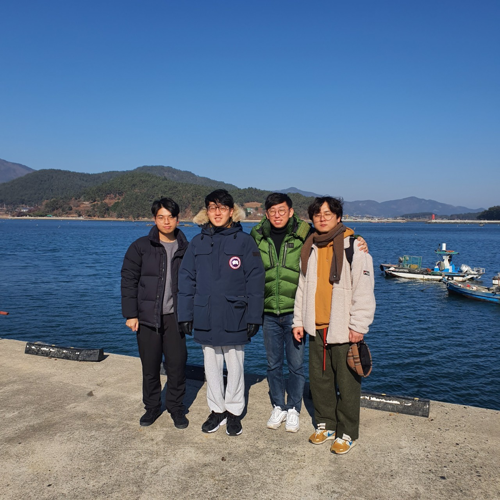
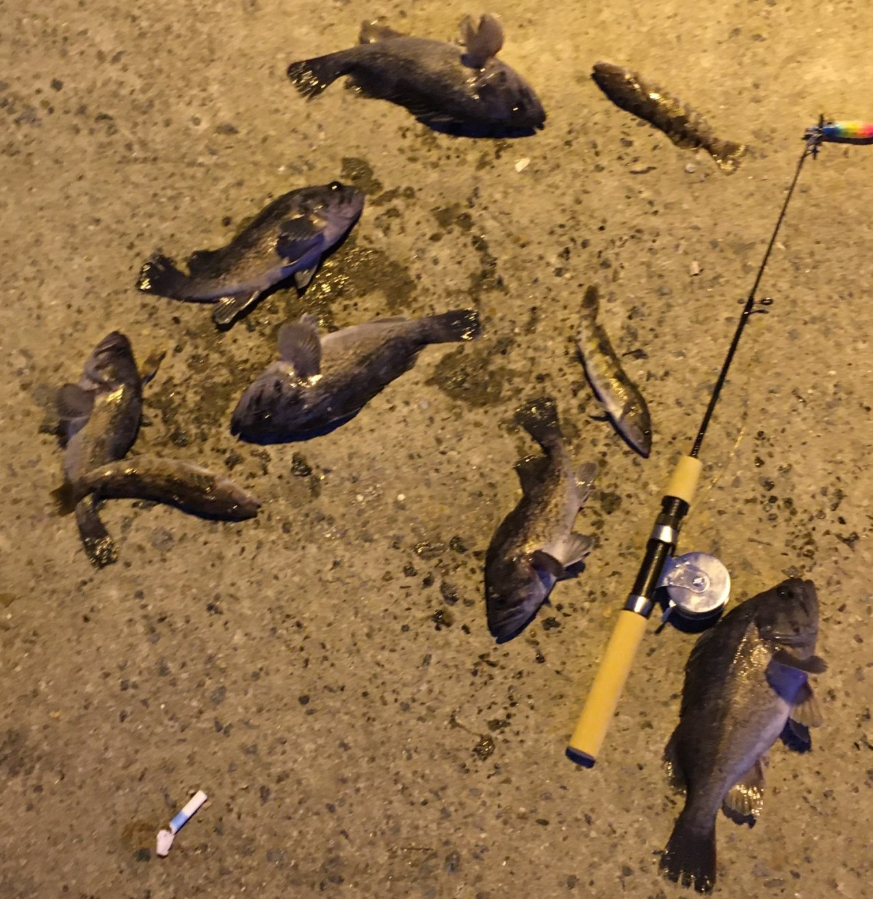

목차
인물소개
혜성처럼 등장한 신예 '찐남' 성민규가 합류한 첫 여행으로 지금의 성도신장 4인체제가 완성되었다. 첫 겨울여행이며 이 때 낚시에 미쳐버린 장희재의 주도로 떠난 '볼락 낚시여행'이다. 낚시여행이라 말하기 무색할 정도로 조과는 처참하였고 지나가던 어부가 불쌍해보여서 우럭 몇마리를 던져줬다고 한다.  ◀ 4인의 찐남들  ◀ 어부가 던져준 우럭